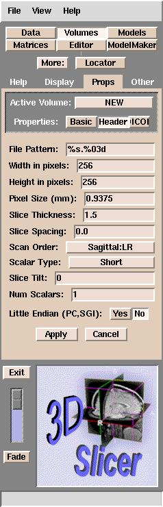

Slicer can read a number of different image formats, including:
GE Genesis, GE Signa, DICOM (digital imaging and communications in medicine), and no-header format.
You can use the following sequence to load your data into Slicer:
- Type the command:
- On the Main menu, click Data.
- Click Add Volume. The Props panel should appear:
Slicer browser interface
If your data is in DICOM format:
- Click DICOM (some of the letters may not be visible).
- See Using DICOM data with Slicer.
For other data formats:
- Click Browse.
Slicer will open the
directory where you started Slicer from.
- Double-click one of the images that you want to work on, and then click Apply.
Slicer now tries to figure out what kind of data you have so it can properly load and
orient your data. If it succeeds, Slicer will load your data and you will see your images.
If it does not succeed, Slicer will display a
message asking you to enter the header information manually and the following
panel will appear:

Default Slicer header parameters
The default parameters above are the minimum that Slicer requires
to load your data.
Slicer uses these parameters to determine the geometry of your data.
For example, if you have 60 MR images and the parameters for your data are the same as the default parameters, then Slicer would know the following about your data:
- The Field Of View (FOV) of your data, or the distance across your image,
is the product of the Pixel Size and the Width in pixels of the image.
In this case, the FOV would be .9375 x 256 = 240 mm.
- A voxel is a 3-dimensional pixel.
The size of a voxel is the product of the Pixel Size width, the Pixel Size height, and Slice Thickness + Slice Spacing.
In this case, the voxel size is .9375 * .9375 * (1.5 + 0.0) = 1.3183 cubic mm.
- The volume of a slice is the voxel size * Width in pixels * Height in pixels.
In this case, the volume of a slice is 1.3183 * 256 * 256 = 86396 cubic mm, or 86.396 cubic cm (cc).
- The total volume of this dataset is the product of the volume of a slice and the total number of slices. In this case, the total volume of the dataset is 86396 * 60 slices = 5183760 cubic mm or 518.376 cubic cm (cc).
These default parameters are commonly used, but
you will need to know the correct values for your data to view your data properly.
Most
of these parameters should be self-explanatory, except the File Pattern.
This is the pattern for naming the files, expressed in C language syntax. For example, a file named skin.001 has a pattern of %s.%03d, and a file named skin.1 has %s.%d for a pattern.
The default is "%s.%03d".
This means that Slicer is able to
read images numbered with 3 digits after the decimal point (xxx.001 to xxx.999).
If your images are instead numbered xxx.1 to xxx.9, you will need
to change the File Pattern to "%s.%d".
When you have entered all the parameters correctly for your data, click
Apply and Slicer will load the data.
Please note that when you have finished editing your data, the segmented/edited images
that Slicer writes out do not contain any header information. Slicer
encodes this header information into a MRML (Medical Reality Modeling Language) file when you save your
scene. This file describes the volumes that you have loaded into Slicer
and how you have modified them using Slicer's tools.
In most cases, you will want to load more than one dataset.
To load more data,
simply repeat the procedure above.
Slicer typically will display up to three data sets at one time:
a foreground, a background, and a segmented dataset.
When the Data tab is active, the data sets that comprise the current scene
appear in the MRML File Contents (Current Scene) panel. This looks
like:
Description of Scene
If some of your data is incorrect or you want to rearrange the order in which
your data is loaded, you can move or delete it.
- Click on
the offending data.
- Then right-click.
- Select from the menu to either delete or cut and paste the data.